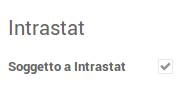

Intrastat base
Odoo Italia Network

Questo modulo si occupa della riclassificazione delle merci e dei servizi che sono oggetto di transazioni comunitarie e di creare l'apposita dichiarazione intrastat da presentare all'Agenzia delle Dogane. Per la dichiarazione è possibile generare il file da presentare all'Agenzia delle Dogane. Il modulo precarica anche le tabelle necessarie alla compilazione della dichiarazione: Nomenclature combinate, Sezioni doganali, Natura transazioni, Trasporto
In Configurazione >> Aziende >> Aziende >>
2. Default sale values (parametri Intrastat per le fatture di vendita) a) Force Statistic Amount Euro: flag attualmente non gestito b) Transaction Nature: indica il valore di default che verrà impostato nelle righe Intrastat di una fattura per il campo di riferimento (natura della transazione) c) Consegna: indica il valore di default che verrà impostato nelle righe Intrastat di una fattura per il campo di riferimento (metodo di consegna) d) Transport: indica il valore di default che verrà impostato nelle righe Intrastat di una fattura per il campo di riferimento (metodo di trasporto delle merci) e) Provincia di Origine: indica il valore di default che verrà impostato nelle righe Intrastat di una fattura per il campo di riferimento (provincia di origine della spedizione di merce venduta)
3. Default purchase value (parametri Intrastat per le fatture di acquisto) a) Force Statistic Amount Euro: flag attualmente non gestito b) Transaction Nature: indica il valore di default che verrà impostato nelle righe Intrastat di una fattura per il campo di riferimento (natura della transazione) c) Consegna: indica il valore che verrà impostato di default nelle righe Intrastat di una fattura per il campo di riferimento (metodo di consegna) d) Transport: indica il valore che verrà impostato di default nelle righe Intrastat di una fattura per il campo di riferimento (metodo di trasporto delle merci) e) Provincia di Destinazione: indica il valore che verrà impostato di default nelle righe Intrastat di una fattura per il campo di riferimento (provincia di destinazione della spedizione di merce acquistata)
In Contabilità >> Configurazione >> Varie >> Intrastat sono presenti le funzionalità per la gestione delle tabelle di sistema. - Sezione doganale - Intrastat Nomenclature combinate - Transport (modalità di trasporto) - Transaction nature (natura della transazione) Tali tabelle sono pre-popolate in fase di installazione del modulo, in base ai valori ammessi per le dichiarazioni Intrastat.
L'assoggettamento ad Intrastat può essere gestito anche a livello generale di singolo partner, associandogli una posizione fiscale che abbia un flag attivo per l'apposito campo “Soggetto a Intrastat”
Tutte le fatture create per il partner che abbia una posizione fiscale marcata come soggetta ad Intrastat avranno l’apposito campo Soggetto a Intrastat automaticamente flaggato.
La classificazione Intrastat della merce o servizio può essere fatta sia a livello di categoria che a livello di prodotto. La priorità è data al prodotto: se su un prodotto non è configurato un codice Intrastat, il sistema tenta di ricavarlo dalla categoria cui quel prodotto è associato. Per il prodotto la sezione intrastat è nel tab Contabilità, ove è necessario inserire: - la tipologia (Merce, Servizio, Varie, escludi) - il codice Intrastat, tra quelli censiti tramite l’apposita tabella di sistema Intrastat Nomenclature combinate (il campo si abilita solo per le tipologie Merce e Servizio)
Per le categorie di prodotti, le informazioni sono presenti in un’apposita area Intrastat della maschera di dettaglio: